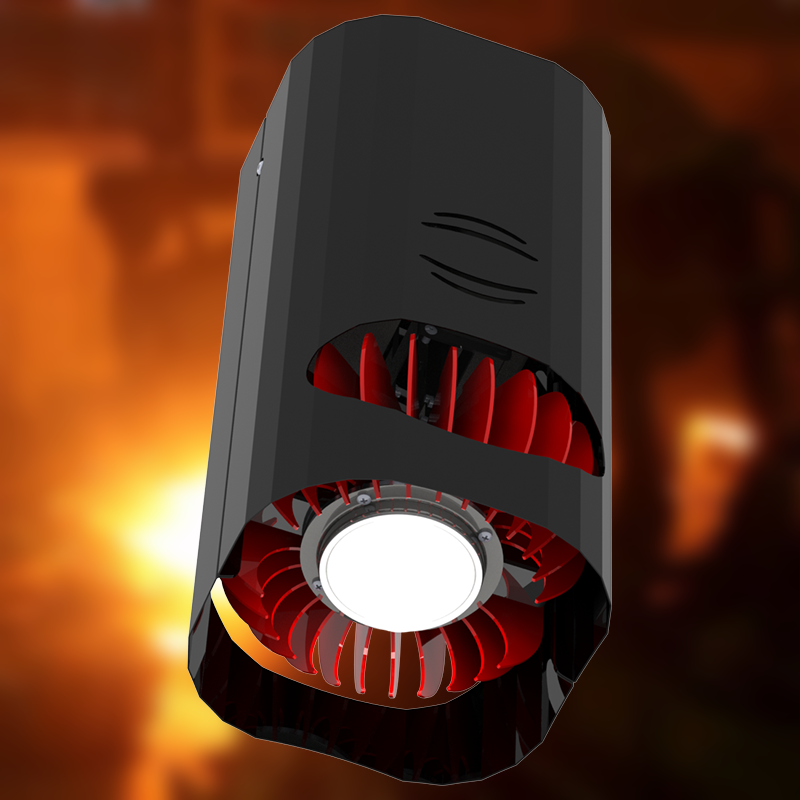
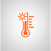

Светодиодные светильники серии «АС-Пром» предназначены для общего освещения производственных помещений, цехов, складов и других промышленных площадок. Так же может быть использован для освещения открытых территорий с установкой под навесом.

Световой поток светильника 7 400 лм
Номинальная мощность светильника 55 Вт
Эффективность светильника 134 лм/Вт
КТЦ (коррелированная цветовая температура) 5 000 K
Тип КСС (кривая сила света) К(60°), Г(90°), Л(120°)
Пульсация светового потока менее <1 %
CRI (общий индекс цветопередачи) 70
Производитель светодиодов Seoul Semiconductor
Срок службы светодиодов 100 000 часов
Напряжение сети 135-260 В
Частота сети 45-65 Гц
Коэффициент мощности ≥ 0,97
Класс защиты от поражения электрическим током II
Вид климатического исполнения УХЛ 2
Температура эксплуатации от -60 до +40 °С
Степень защиты IP 65
Срок службы светильника 50 000 часов
Гарантия 36 месяцев
Форм-фактор High bay
Оптика Линза (боросиликат.)
Материал корпуса Алюминиевый сплав
Варианты крепления Подвесной (рым-болт)
Габаритные размеры корпуса, мм 185х204х397
Габаритные размеры упаковки, мм 200х220х410
Масса, не более 4,3 кг
Масса с упаковкой , не более7 400 лм 4,7 кг
все указанные параметры могут меняться по желанию заказчика
МОЩНОСТЬ 55 Вт СВЕТОВОЙ ПОТОК 7 400 лм IP 65 КЦТ  5 000 К ЦВЕТОПЕРЕДАЧА CRI 70 ГАРАНТИЯ 36 месяцев
Предыдущий Применение К промышленным Следующий
На главную Каталог Проекты О компании Контакты
Copyright © as-terra.ru, 2019 | Все права защищены